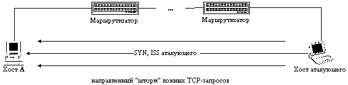

|
4.6. Нарушение работоспособности хоста в сети
Internet при использовании направленного
"шторма" ложных TCP-запросов на создание
соединения, либо при переполнении очереди
запросов
Из рассмотренной в предыдущем пункте схемы
создания TCP-соединения следует, что на каждый
полученный TCP-запрос на создание соединения
операционная система должна сгенерировать
начальное значение идентификатора ISN и отослать
его в ответ на запросивший хост. При этом, так как
в сети Internet (стандарта IPv4) не предусмотрен
контроль за IP-адресом отправителя сообщения, то
невозможно отследить истинный маршрут,
пройденный IP-пакетом, и, следовательно, у
конечных абонентов сети нет возможности
ограничить число возможных запросов,
принимаемых в единицу времени от одного хоста.
Поэтому возможно осуществление типовой УА
"Отказ в обслуживании" (п. 3.2.4), которая будет
заключаться в передаче на атакуемый хост как
можно большего числа ложных TCP-запросов на
создание соединения от имени любого хоста в сети
(рис. 4.11). При этом атакуемая сетевая ОС в
зависимости от вычислительной мощности
компьютера либо - в худшем случае - практически
зависает, либо - в лучшем случае - перестает
реагировать на легальные запросы на подключение
(отказ в обслуживании). Это происходит из-за того,
что для всей массы полученных ложных запросов
система должна, во-первых, сохранить в памяти
полученную в каждом запросе информацию и,
во-вторых, выработать и отослать ответ на каждый
запрос. Таким образом, все ресурсы системы
"съедаются" ложными запросами:
переполняется очередь запросов и система
занимается только их обработкой. Эффективность
данной удаленной атаки тем выше, чем больше
пропускная способность канала между атакующим и
целью атаки, и тем меньше, чем больше
вычислительная мощь атакуемого компьютера
(число и быстродействие процессоров, объем ОЗУ и
т. д.).

Рис. 4.1.1 Нарушение работоспособности хоста в Internet,
использующее направленный шторм ложных TCP-запросов
на создание соединения.
С нашей точки зрения, очевидность данной
удаленной атаки была ясна еще лет двадцать назад,
когда появилось семейство протоколов TCP/IP. Корни
этой атаки находятся в самой инфраструктуре сети
Internet, в ее базовых протоколах - IP и TCP. Но каково же
было наше удивление, когда мыувидели на
информационном WWW-сервере CERT (Computer Emergency Respone Team)
первое упоминание об этой удаленной атаке,
датированное только 19 сентября 1996 года! Там эта
атака носила название "TCP SYN Flooding and IP Spoofing
Attacks" - "навод-нение" TCP-запросами с ложных
IP-адресов.
Другая разновидность атаки "Отказ в
обслуживании" состоит в передаче на атакуемый
хост нескольких десятков (сотен) запросов на
подключение к серверу, что может привести к
временному (до 10 минут) переполнению очереди
запросов на сервере (см. атаку К. Митника из п. 4.5.2
и пример с ОС Linux 1.2.8 в конце данного пункта). Это
происходит из-за того, что некоторые сетевые ОС
устроены так, чтобы обрабатывать только первые
несколько запросов на подключение, а остальные -
игнорировать. То есть при получении N запросов на
подключение, ОС сервера ставит их в очередь и
генерирует соответственно N ответов. Далее, в
течение определенного промежутка времени,
(тайм-аут ? 10 минут) сервер будет дожидаться от
предполагаемого клиента сообщения, завершающего
handshake и подтверждающего создание виртуального
канала с сервером. Если атакующий пришлет на
сервер количество запросов на подключение,
равное максимальному числу одновременно
обрабатываемых запросов на сервере, то в течение
тайм-аута остальные запросы на подключение будут
игнорироваться и к серверу будет невозможно
подключиться.
Эксперименты с данной удаленной атакой,
проводимые на различных сетевых ОС в
экспериментальных 10-мегабитных сегментах сети,
выявили следующие интересные результаты, с
которыми авторы считали бы необходимым вас
ознакомить. В случае передачи по каналу связи
максимально возможного числа TCP-запросов на
создание соединения и нахождении атакующего в
одном сегменте с целью атаки атакуемые системы
вели себя следующим образом: ОС Windows '95,
установленная на 486DX2-66 с 8 Мб ОЗУ, "замирала"
и переставала реагировать на всяческие внешние
воздействия (нажатия на клавиатуру, например); ОС
Linux 2.0.0 на 486DX4-133 c 8 Мб ОЗУ тоже практически
прекращала всякую работу и обрабатывала одно
нажатие на клавиатуре примерно 30 секунд. Мало
того, что к этим атакованным хостам было,
естественно, невозможно получить удаленный
доступ, но и локальный доступ был невозможен!
Наилучший результат в процессе этого теста
показал двухпроцессорный файрвол: удаленное
подключение к нему было также невозможно, но
осуществляемая атака на локальных пользователях
никак не сказывалась (все-таки два процессора).
Не менее интересным было поведение атакуемых
систем после снятия воздействия. ОС Windows '95
практически сразу же после прекращения
воздействия начала нормально функционировать; в
ОС Linux 2.0.0 с 8 Мб ОЗУ, по-видимому, переполнился
буфер, и более получаса система не
функционировала ни для удаленных, ни для
локальных пользователей, а занималась передачей
ответов на полученные ранее запросы.
Двухпроцессорный файрвол сразу же после снятия
воздействия стал доступен для удаленного
доступа.
При нахождении с атакуемыми системами в
соседних смежных сегментах выяснилось
следующее: OC Windows '95 на Pentium100 с 16 Мб ОЗУ
обрабатывала каждое нажатие на клавиатуре
примерно секунду, ОС Linux 2.0.0 на Pentium100 с 16 Мб ОЗУ
практически "повисла" - одно нажатие за 30
секунд, зато после снятия воздействия у
локального пользователя немедленно появилась
возможность нормальной работы.
Не нужно обманываться результатами этого теста
и считать, что Windows '95 показала себя с лучшей
стороны. Это связано только лишь с тем, что
передаваемые
TCP-запросы направлялись на FTP-порт, то есть это был
запрос на подключение к FTP-серверу, а так как
Windows '95 - принципиально клиентская
операционная система и FTP-сервера под нее нет, то,
следовательно, сохранять в памяти параметры
запроса и дожидаться окончания handshake ей просто не
было необходимости.
В процессе эксперимента также была выявлена
одна принципиальная слабость, присущая всем ОС
Linux. После передачи около десятка запросов на
определенный порт (FTP или TELNET) на некоторое время
(до нескольких десятков минут) на атакуемом хосте
отключался соответствующий данному порту сервер
(каждая программа-сервер ожидает запросов на
определенном зарезервированном порту), то есть в
течение определенного промежутка времени у
пользователей не было возможности удаленно
подключиться к данному серверу и получить
удаленный доступ к его ресурсам. Это, как уже
говорилось ранее, связано с переполнением числа
одновременно обслуживаемых данным сервером
клиентов.
В заключение необходимо отметить, что в
существующем стандарте сети Internet IPv4 нет
приемлемых способов надежно обезопасить свои
системы от этой удаленной атаки. К счастью,
атакующий в результате осуществления описанной
атаки не сможет получить несанкционированный
доступ к вашей информации. Он сможет лишь
"съесть" вычислительные ресурсы вашей
системы и нарушить ее связь с внешним миром.
Остается надеяться, что нарушение
работоспособности вашего хоста просто никому не
нужно.
|